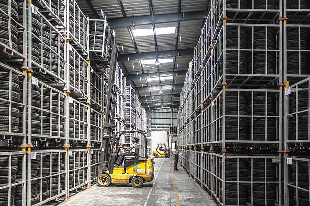

Автомобильные перевозки
Автомобильные перевозки всех видов грузов, как с полной (Full Truck Load), так и с неполной (Less Than
Truck Load) загрузкой на территории всей Европы, в том числе в рамках интермодальных перевозок.
Читать подробнее об автомобильных перевозках

Авиа-перевозки
Воздушный транспорт – это, прежде всего, быстрая доставка груза адресату. Он идеально подходит для
перевозок чувствительных грузов.
Читать подробнее об авиа-перевозках
Морские перевозки
Комплексное обслуживание во всех портах мира импортных и экспортных контейнерных перевозок как с полной
(FCL), так и с частичной (LCL) загрузкой.
Читать подробнее о морских перевозках
Железнодорожные перевозки
Комплексное обслуживание железнодорожных перевозок (импорт и экспорт) по Новому шёлковому пути в прямом
сообщении Китай - Польша.
Читать подробнее о железнодорожных перевозках

Складская логистика
Сеть складов для хранения и перевалки грузов, расположенных в стратегических точках, вблизи терминалов и
главных транспортных путей.
Читать подробнее о складской логистике
Таможенное оформление
Наше таможенное агентство выполняет таможенное оформление грузов в рамках всех действующих таможенных
процедур (в том числе по упрощенной процедуре) в Польше и за рубежом.
Читать подробнее о таможенном оформлении